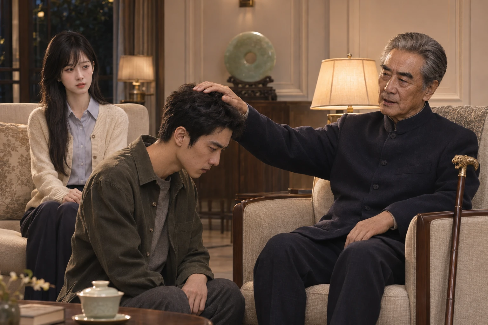
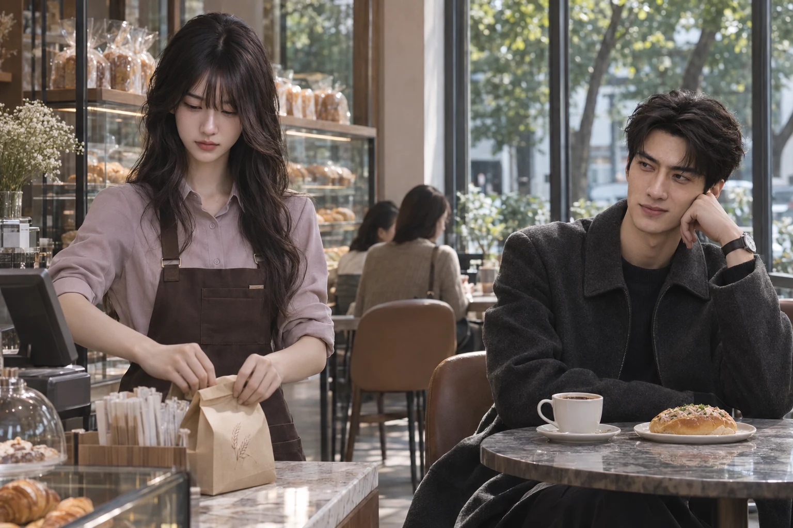
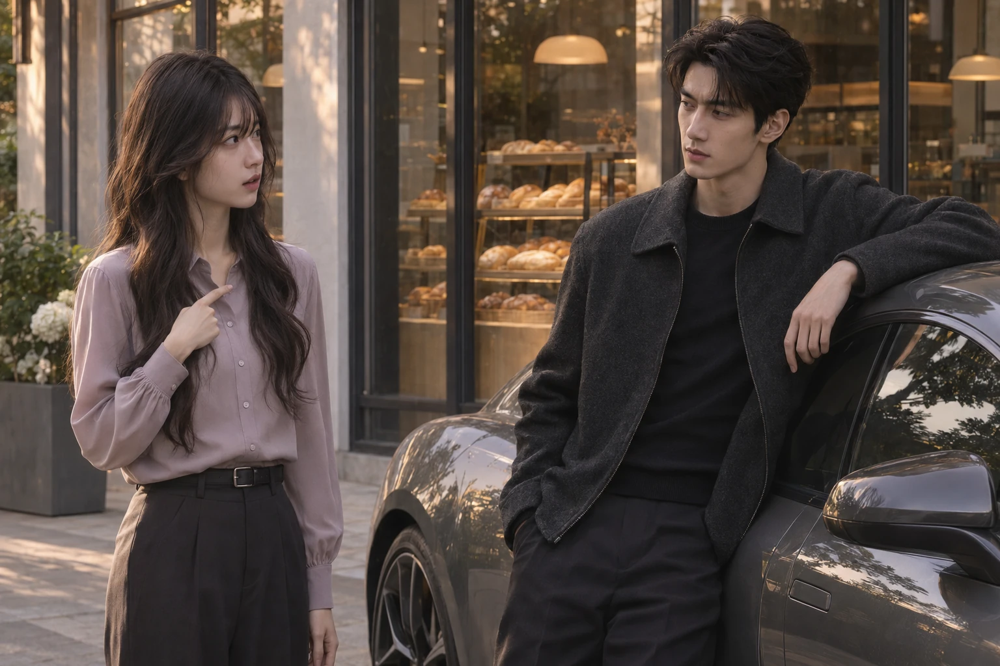
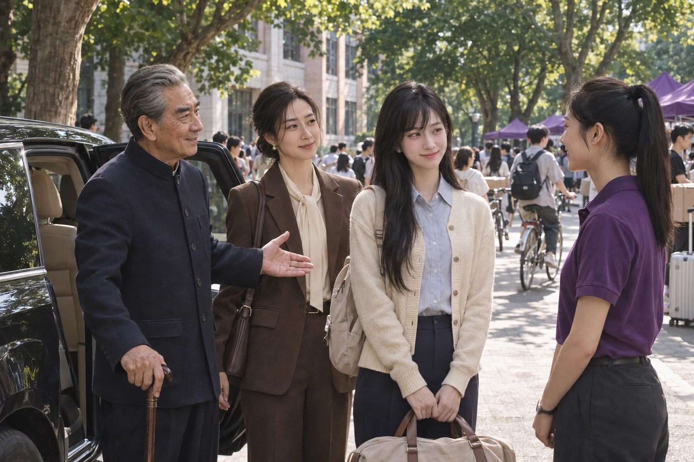

ตอนที่ 26
พระเอกป่วยจิต
เจียงเซินสูดลมหายใจเข้าลึก ๆ พยายามไม่สบตาซ่งอวิ๋น เพราะความรู้สึกโกรธเคืองพุ่งขึ้นไม่หยุด มิหนำซ้ำบาดแผลในปากของเขาปวดแสบปวดร้อนแสนทรมาน แทบกลืนอะไรไม่ลงเลยด้วยซ้ำ
“มีอะไรก็พูดมาเถอะ” ผู้เฒ่าซ่งเคาะไม้เท้าลงพื้น เรียกสติเจียงเซินให้กลับมาอยู่กับเนื้อกับตัว
“ผม.. จะมาขอโทษคุณตากับอาอวิ๋นครับ เมื่อตอนบ่ายผมขาดสติ ก็เลยพูดอะไรไม่คิด” กว่าจะกลั่นออกมาแต่ละคำ เขาต้องฝืนใจอย่างมาก เพราะลึก ๆ แล้วเขายังรู้สึกว่าตัวเองไม่ได้ผิด
เขาคิดว่าตาซ่งอาจจะตำหนิเขาอย่างรุนแรง ทว่าชายชรากลับยื่นมือออกมาวางบนศีรษะเขา แล้วถามเสียงสงบ
“เจ็บมากหรือเปล่า”
“ผม..” ชายหนุ่มกลอกตาล่อกแล่ก วางตัวไม่ถูก
“อาเซิน คนเรามีความคิดเห็นแตกต่างกันได้ แต่ไม่ควรเอาความคิดตัวเองไปตัดสินคนอื่น เรื่องบางเรื่องหลานอาจรู้สึกว่าตัวเองคิดถูกต้องที่สุด แต่นั่นเป็นเพราะหลานยังไม่เคยยืนในจุดที่คนอื่นยืนอยู่”
ซ่งเต๋อพูดอย่างใจเย็น แม้ไม่มีความเกรี้ยวกราด แต่ซ่งเซียงกลับรู้สึกได้ว่านี่เป็นความเมตตาสุดท้ายที่พ่อของเธอมีให้เจียงเซิน

“...”
“ตาไม่คาดหวังให้หลานต้องเข้าใจทุกอย่างที่ตาทำหรอกนะ แต่ถ้าในใจหลานเต็มไปด้วยอคติ ก็ต่างคนต่างอยู่เถอะ ดีกว่าสาดอารมณ์ด้านลบใส่กันไปมาแบบนี้”
ชายชราปวดใจ เพราะรู้ดีว่าหลานชายคนนี้กู่ไม่กลับ อาอิ๋นพูดถูก บางอย่างสูญเสียไปแล้ว ก็ต้องทำใจยอมรับ เจียงเซินอาจคิดได้ในวันหนึ่ง หรืออาจจะสุดโต่ง ไม่มีใครรู้ทั้งสิ้น
“ผมเข้าใจแล้วครับคุณตา” เจียงเซินหายใจไม่ทั่วท้อง ทั้งที่เขามั่นใจว่าความคิดตนเองถูกต้องที่สุด แต่ทำไมส่วนลึกในใจถึงสั่นคลอน
ผู้เฒ่าซ่งหันหน้าไปมองลูกสาว “เสี่ยวเซียง คืนนี้นอนที่นี่เถอะ ขับรถกลางค่ำกลางคืนมันอันตราย”
“เกิดเรื่องอะไรขึ้นเหรอครับคุณพ่อ” เจียงกั๋วถามตรงประเด็น
“อืม เกิดเรื่องนิดหน่อย” ซ่งเต๋อชะงักไปนิด ก่อนจะเล่าให้ฟังว่าเกิดอะไรขึ้น
ยอมรับว่าเขาชอบเจียงกั๋วเพราะความฉลาดเฉลียว ตอนซ่งเซียงแต่งงาน เขาก็ไม่ได้คัดค้าน เพราะเห็นทั้งคู่รักกันดี เอาเข้าจริงผู้เฒ่าซ่งกับภรรยาไม่เคยกีดกันความรักของลูก ๆ เลย รักแบบไหน ชอบแบบไหนก็ปล่อยให้ตัดสินใจเอง หากไม่พากันล่มจมตกต่ำ เขาก็ยินดีสนับสนุน
“แสดงว่าตอนนี้เสี่ยวอวิ๋นกำลังโดนปองร้ายเหรอครับ” เจียงซูใจไม่ดี ดึงน้องน้อยมากอดแน่นอย่างหวงแหน
“ที่น่ากังวลก็คือคนเบื้องหลังต้องมีฝีมือ มีเส้นสาย และมีอำนาจ ไม่งั้นคงกลบร่องรอยได้ไม่มิดชิดแบบนี้” ซ่งเต๋อมองหลานสาว ในฐานะหลานสาวสายตรง ไม่แปลกหากตกเป็นเป้า ตัวเสี่ยวอวิ๋นเองก็ดูไม่ตกใจอะไร
“แต่มหาวิทยาลัยกำลังจะเปิดเทอมแล้ว เสี่ยวอวิ๋นกลัวหรือเปล่าลูก” ซ่งเซียงเคร่งเครียด
“ไม่กลัวค่ะอารอง หนูจะดูแลตัวเองให้ดี” ซ่งอวิ๋นส่ายศีรษะไร้ความเกรงกลัว
เธอมีหนึ่งชีวิต หากพยายามสุดความสามารถแล้วยังพลิกชะตาตัวเองไม่ได้ ก็ถือว่าเธอได้พยายามแล้ว
“มีอะไรให้อาช่วยก็บอกได้เลยนะ อาพอจะมีเพื่อนสอนอยู่ในชิงหวา ถ้าเกิดอะไรขึ้น หลานไปขอความช่วยเหลือจากเขาได้” เจียงกั๋วพูดด้วยท่าทางเป็นห่วงและกังวล
“ขอบคุณค่ะอาเขย” น้ำเสียงเธอขาดห้วงไปเล็กน้อย จู่ ๆ หัวใจเธอก็วูบโหวงแปลก ๆ ก่อนจะหายไปอย่างรวดเร็ว
“ขอบคุณอะไรกัน ครอบครัวเดียวกันทั้งนั้น”
เจียงเซิน “...”
คนอย่างซ่งอวิ๋น มีศัตรูไม่ใช่เรื่องแปลก เธอมีนิสัยเย่อหยิ่ง ชอบล่วงเกินคนอื่นอยู่แล้ว การถูกวางยาถ่าย ให้อับอายบนเวทีก็ไม่เห็นน่าตกใจตรงไหน เธอทำตัวเองทั้งนั้น จะโทษใครได้เล่า
...
กระแสรายการแข่งขันร้องเพลงดีกว่าที่คาดหวังไว้มาก ติดเทรนด์การค้นหาอันดับต้น ๆ นอกจากคนดูจะพูดถึงและชื่นชมผู้เข้าแข่งขันแล้ว เด็กน้อยมหัศจรรย์ในตำนานอย่างซ่งอวิ๋นยังเปรียบเสมือนสนามแม่เหล็ก ดึงผู้ชมให้เข้ามาสนใจรายการ ผู้กำกับหูกับโปรดิวเซอร์ดีใจกระโดดกอดกันกลม
ซ่งหว่านไม่รู้ว่าเมื่อวานบ้านซ่งทะเลาะกันวุ่นวายขนาดไหน แต่เธอคิดเข้าข้างตัวเองว่าซ่งเซียงคงเกิดตะกอนในใจ ไม่มีใครพอใจที่ลูกชายตนเองถูกทุบตี ต่างก็รู้สึกว่า ‘ลูกฉันเป็นคนดี’ กันทั้งนั้น
เธอหลับฝันหวานเพราะคิดว่าหว่านเมล็ดพันธุ์แห่งความขัดแย้งได้สำเร็จ จึงตื่นเช้าและไปทำงานด้วยความสดใส วันนี้ร้านขนมของเธอก็ยังมีลูกค้าเข้าออกมากหน้าหลายตา
“รับอะไรดีคะคุณลูกค้า” ซ่งหว่านนำเมนูน้ำและขนมไปยื่นให้ลูกค้าหนุ่มผู้โดดเด่นสะดุดตา
เขาคือชายหนุ่มร่างสูงโปร่งราวหนึ่งร้อยแปดสิบเซนติเมตร ใบหน้าหล่อเหลาคมคาย กรามได้รูปชัดเจนรับกับสันจมูกโด่งตรง ดวงตาลึกเย็นคล้ายมองทะลุความคิดของผู้คนได้ เพียงปรายตามองก็ทำให้อากาศรอบตัวพลันตึงเครียดขึ้นมาอย่างไม่รู้ตัว
แม้อายุยังน้อย แต่ท่าทางกลับเปี่ยมด้วยอำนาจ ทุกการเคลื่อนไหวเรียบง่ายแต่มั่นคง คล้ายผู้ที่คุ้นชินกับการออกคำสั่งมากกว่าการเชื่อฟัง เสียงพูดต่ำหนักแน่น ไม่จำเป็นต้องดังแต่กลับทำให้ผู้ฟังเงียบลงโดยอัตโนมัติ
“ขอกาแฟดำกับขนมปังทูน่า” มุมปากหยักลึกยกขึ้นน้อย ๆ ความน่าเกรงขามในตอนแรกหายไป แทนที่ด้วยความน่าหลงใหล
“รับทราบค่ะ รอสักครู่นะคะ” ซ่งหว่านใจสั่นรัว ความหล่อเหลาของเขาไม่ได้ให้ความรู้สึกอ่อนโยน หากเป็นความหล่อที่คมเข้มและน่าเกรงขาม เสมือนดาบที่ถูกชักออกจากฝัก แม้ยังเยาว์วัยทว่ามีรัศมีเย็นเยียบของผู้มีอำนาจแผ่ออกมาจนไม่มีใครกล้าสบตานานนัก
แต่แบบนี้กลับทรงเสน่ห์ ถูกใจสาวน้อยสาวใหญ่ ตัวเธอก็เคลิ้มไปชั่วขณะเช่นกัน จะว่าไปแล้วเธอคุ้นหน้าคุ้นตาเขาจริง ๆ เป็นลูกหลานตระกูลใดสักตระกูลหรือเปล่านะ เหมือนเคยเจอกันมาก่อน
‘ฉินชาง’ คุณชายรองตระกูลฉิน จับจ้องเรือนร่างเพรียวบางทำงานอย่างขยันขันแข็ง มุมปากกระตุกยิ้มพอใจ

‘อาหว่าน ชาตินี้ปล่อยให้เป็นหน้าที่ฉันเถอะ ฉันจะกำจัดอุปสรรคทุกอย่างให้เธอเอง’
ซ่งหว่านไม่รู้ว่าตัวช่วยคนสำคัญของเธอมาแล้ว หญิงสาวตั้งอกตั้งใจทำงานตลอดทั้งวัน เมื่อถึงเวลาเลิกงาน เธอเดินออกจากร้านก็เห็นชายหนุ่มเมื่อตอนกลางวัน กำลังพิงประตูรถสปอร์ตคันหนึ่ง
“ผม.. ขอช่องทางการติดต่อคุณได้ไหมครับ” เสียงทุ้มนุ่มลึก ฟังแล้วชวนใจสั่น
“เอ๊ะ ฉันเนี่ยนะคะ” หญิงสาวชี้นิ้วเข้าหาตัวเองย้ำ ๆ ไม่แน่ใจว่าตัวเองได้ยินผิดไปหรือเปล่า

...
ซ่งอวิ๋นยังไม่รู้ว่าพระเอกและนางเอกโรคจิตได้เจอและสานสัมพันธ์กันแล้ว เธอมัวแต่ยุ่งอยู่กับการจัดของสำคัญใส่กระเป๋า เนื่องจากอีกไม่กี่วัน มหาวิทยาลัยจะเปิดเทอมแล้ว
วันสุดท้ายก่อนเปิดเทอม เธอไปเยี่ยมพี่ช่างแต่งหน้าในโรงพยาบาล พบว่าอีกฝ่ายหน้าตาสดใสขึ้นมาก ใกล้จะได้ออกจากโรงพยาบาลแล้ว คนป่วยขอบคุณซ้ำแล้วซ้ำเล่าเรื่องค่ารักษาพยาบาลที่ตระกูลซ่งช่วยจ่ายให้ เพราะการดูแลระดับ VVIP เช่นนี้เธอเองก็คงจ่ายไม่ไหว
เช้าวันเปิดเทอมวันแรกของมหาวิทยาลัยชิงหวา เมืองปักกิ่งยังอาบด้วยแสงแดดอ่อนปลายฤดูร้อน ท้องนภาสีฟ้าใสไร้เมฆ ลมเย็นพัดผ่านแนวต้นหลิวและต้นแปะก๊วยที่เรียงรายตลอดสองข้างถนนภายในมหาวิทยาลัย เสียงล้อกระเป๋าเดินทางครูดไปตามพื้นหินดังสลับกับเสียงหัวเราะของนักศึกษาใหม่ที่เพิ่งก้าวเข้าสู่รั้วมหาวิทยาลัยเป็นครั้งแรก
ประตูมหาวิทยาลัยคึกคักราวกับงานเทศกาล ผู้ปกครองถือกระเป๋าและกล่องสัมภาระมาส่งลูกหลานด้วยสีหน้าทั้งภูมิใจและอาลัยเล็ก ๆ อาสาสมัครรุ่นพี่สวมเสื้อสีม่วงเข้มยืนถือป้ายต้อนรับ แจกแผนที่และบอกทางไปหอพักอย่างคล่องแคล่ว เสียงประกาศจากลำโพงดังเป็นระยะ แจ้งขั้นตอนรายงานตัวและสถานที่รับบัตรนักศึกษา
บนถนนสายหลักของมหาวิทยาลัย จักรยานจำนวนมากแล่นผ่านไปมาอย่างไม่ขาดสาย บางคันมีหนังสือกองสูงผูกไว้ท้ายรถ บางคันมีช่อดอกไม้เล็ก ๆ สำหรับแสดงความยินดีกับนักศึกษาใหม่ กลิ่นหญ้าที่เพิ่งรดน้ำผสมกับกลิ่นกาแฟจากร้านเล็กใกล้อาคารเรียนลอยมาตามลม ทำให้บรรยากาศสดชื่นและมีชีวิตชีวา
ผู้เฒ่าซ่งตื่นตั้งแต่เช้า เพื่อมาส่งหลานสาวพร้อมกับลูกสะใภ้ เขาเป็นห่วงหลานสาว แต่เชื่อมั่นว่าหลานสาวที่เขาฟูมฟักมาเองกับมือแข็งแกร่ง ดูแลตัวเองได้
“ดูแลตัวเองดี ๆ นะลูก มีอะไรก็โทรมา บ้านเราอยู่ใกล้แค่นี้ ขับรถไม่กี่นาทีก็ถึงแล้ว” โจวจิ่วดึงลูกสาวเข้ามากอดแน่น เผลอแป๊บเดียว ลูกสาวของเธอก็โตถึงขนาดนี้แล้ว ใจหายจริง ๆ
“ค่ะแม่ หนูจะดูแลตัวเองดี ๆ เลยค่ะ” หญิงสาวพยักหน้าหงึก ๆ ก่อนหันไปกอดปู่ซ่ง “คุณปู่ดูแลสุขภาพตัวเองดี ๆ นะคะ เดี๋ยวหนูจะกลับบ้านทุกสัปดาห์เลย”
“ช่วงแรกถ้าเหนื่อยเกินไปก็ไม่ต้องกลับ ปู่รอได้ หลานดูแลตัวเองให้ดีก็พอ”
“ไม่ได้หรอกค่ะ เหนื่อยแค่ไหนก็ต้องกลับ ไม่งั้นคงคิดถึงแย่เลย” หญิงสาวประจบอย่างอ้อน ๆ
“หึหึ เจ้าเด็กปากหวาน” ผู้เฒ่าซ่งหัวเราะเสียงดัง ก่อนลงจากรถ และส่งหลานสาวให้กับรุ่นพี่ชุดสีม่วง “ฝากด้วยนะแม่หนู”

“วางใจได้เลยค่ะคุณตา เดี๋ยวหนูแนะนำน้องเอง” รุ่นพี่อาสาสมัครกระตือรือร้นกว่าปกติจนซ่งอวิ๋นวางตัวไม่ถูกไปชั่วขณะ
กระทั่งทราบว่ารุ่นพี่คนดังกล่าวเป็นแฟนคลับ เธอจึงผ่อนคลายลง “ขอบคุณนะคะรุ่นพี่”
“ไม่เป็นไรเลยค่ะ ถ้าขาดเหลืออะไรก็มาบอกพี่ได้นะคะ พี่เดินอยู่แถว ๆ นี้แหละ”
คล้อยหลังรุ่นพี่ผู้กระตือรือร้นและเต็มไปด้วยพลังบวก ซ่งอวิ๋นรายงานตัว รับบัตรนักศึกษา ก่อนลากกระเป๋าสัมภาระตรงดิ่งไปยังหอพักนักศึกษา จับฉลากเลือกห้องพัก และรับกุญแจจากป้าดูแลหอพัก ในใจภาวนาว่าขอให้เพื่อนร่วมหอของเธอไม่ใช่ตัวอันตราย